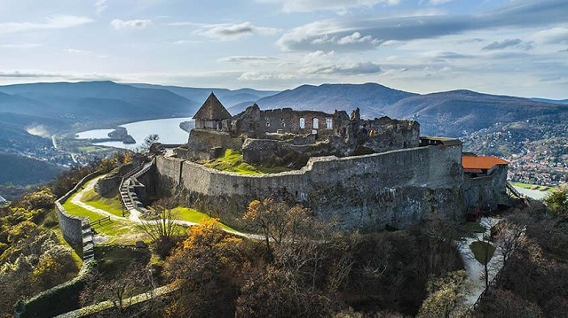
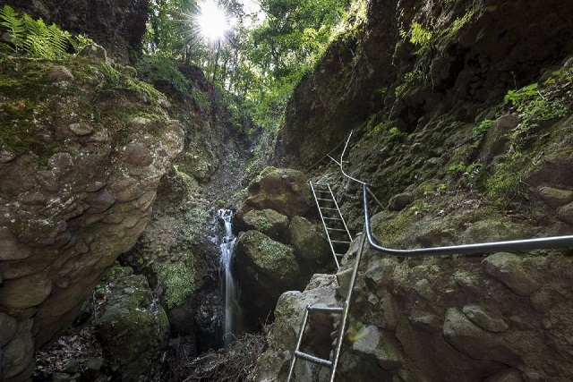

Pilis Látványosságai
Visegrádi vár
Visegrád talán legemblematikusabb építménye, melyre a köznyelv többnyire csak visegrádi várként utal, ezzel is kiemelve a Várhegy tetején magasodó, tiszteletet parancsoló épületegyüttes kulturális jelentőségét. Valójában a Várhegy tövében található Salamon-torony is része az egységnek, mint Alsóvár. Mai állapotában már kell hozzá némi képzelőerő, hogy a két különálló látványosságként megszokott és külön is emlegetett építményt összekössük. Ehhez nyújt egy kis segítséget a rekonstruált alaprajz. Évről évre több tízezren látogatnak el a város legmagasabb pontján fekvő Fellegvárba, melynek teraszáról rendkívüli panoráma nyílik a Dunakanyarra, s mely több, elsősorban a középkorról szóló izgalmas kiállításnak is otthont ad. Mégis, amiről a legtöbben ismerik és amiért igazán szeretik a Fellegvárat a Visegrádra látogatók, az a panoráma odafentről. A hegytetőről a városra és a Dunakanyarra letekintve olyan látvány tárul eléd, melyet egész biztosan nem felejtesz el soha. Ha pedig jártál már itt, a Fellegvár teraszára kell csupán kisétálnod, hogy ismét magával ragadjon a felejthetetlen élmény.
Prédikálószék

A csúcsra érve hazánk egyik legszebb panorámája tárul elénk a gyönyörű Dunakanyarral, a Börzsöny látványával, Nagymarossal és Visegráddal, valamint a távolabbi Vác fölé magasuló Naszály képével. A hegytetőn felállított kereszt és a szikla közelében pihenésre és piknikezésre alkalmas padok és asztalok állnak a kirándulók rendelkezésére. 2016-ban 12 méter magas kilátó épült, Koller József Ybl-díjas építész tervei alapján, melynek átadására október 22-én került sor. A kilátóban 2017 májusa óta látogatottság-számláló működik; ez alapján a 2017. novemberig tartó fél évben majdnem 20 000-en mentek fel a kilátóba, ezen belül közel 8000-en szombati, több mint 6000-en pedig vasárnapi napokon. A 2020-as látogatószám meghaladta a 50 000-et.
A Prédikálószék a Pilis egyik legnépszerűbb kirándulóhelye, amely a Dömörkapu és a Rám-szakadék között található. Ez a sziklaalakzat egy meredek sziklafal, amely a Pilis hegység egyik jellegzetes pontja. A Prédikálószék különösen népszerű a természet szerelmesei és a túrázók körében, akik szeretnék felfedezni a Pilis vadregényes tájait és élvezni a friss levegőt. A csúcsra érve lenyűgöző panoráma tárul elénk, amely magában foglalja a Dunakanyart, a Börzsönyt és a környező hegyeket. A Prédikálószék egy igazi természeti kincs, amely minden látogatónak felejthetetlen élményt nyújt.
Rám szakadék
A Rám-szakadék a Pilis egyik legnépszerűbb kirándulóhelye, mely a Dömörkapu és a Prédikálószék között található. Ez a szurdokvölgy egy sziklaalakzat, amelyet a Rám-patak vájt ki az évezredek során. A szakadékban egy jól kiépített turistaút vezet végig, amely létrákkal és korlátokkal van ellátva, hogy biztonságosan lehessen közlekedni. A Rám-szakadék különösen népszerű a természet szerelmesei és a kalandvágyók körében, akik szeretnék felfedezni a Pilis vadregényes tájait és élvezni a friss levegőt.
A szakadékban található a Rám-szakadék vízesés, amely különösen látványos esős időben, amikor a patak nagyobb mennyiségű vizet szállít. A környék gazdag növény- és állatvilággal rendelkezik, így érdemes figyelni a természet szépségeire és a helyi élőlényekre is. A Rám-szakadék egy igazi természeti kincs, amely minden látogatónak felejthetetlen élményt nyújt.